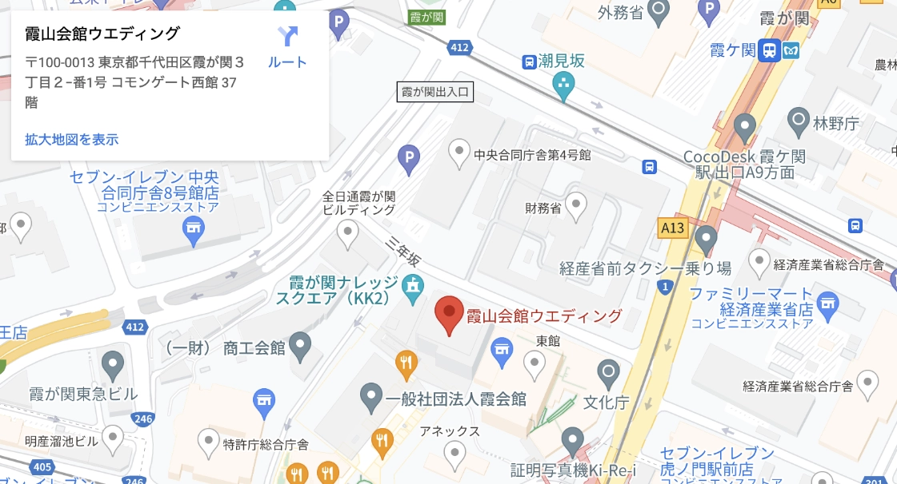

11.4 sat.
KAZAN KAIKAN
新郎
岡村裕樹
Yuki Okamura


Taki Sato
佐藤多希
新婦

皆様いかがお過ごしでしょうか
このたび 結婚式を執り行うこととなりました
日頃お世話になっております みなさまに 私どもの門出を
お見守りいただきたくささやかながら小宴を催したく存じます
ご多用中 誠に恐縮ではございますがぜひご出席いただきたく
ご案内申し上げます
岡村裕樹
佐藤多希

新郎


岡村裕樹
1988年3月1日、東京都生まれ。A型。会社員。
アウトドアが好きで週末は車で
少し遠くまで出掛けます。犬が好きです。
美味しい料理・お酒をご用意してお待ちしております！
新婦


佐藤 多希
1990年12月14日、新潟県生まれ。B型。会社員。
田舎で育ったためかのんびりした性格です。
本を読んだり、映画を見ることが好きです。
皆様にお会いできることを楽しみにしています。


日時
2023年11月4日（土曜日）
挙 式 10時30分
（受 付 10時00分）
披露宴 12時00分
（受 付 11時30分）


霞山会館ウエディング
電話番号：03-3581-1022
〒100-0013 東京都千代田区 霞が関三丁目 2番1号 霞が関コモンゲート西館37階
地下鉄虎ノ門駅／東京メトロ銀座線虎ノ門駅11番出口より徒歩1分、東京メトロ 丸ノ内線・日比谷線・千代田線霞ヶ関駅A13出口より徒歩5分、東京駅より車で約8分
ご出欠
郵送でのご案内状に代わり当招待状をお送りしております
お手数ではございますが出席情報のご登録をお願い申し上げます
また当日のお食事のご用意にあたりアレルギー等がある方は
アレルギー欄にご記入くださいますようお願い申し上げます
2023.3.20

までにご返信をお願いいたします
いずれかをお選びください
*は必須項目です
姓 *
名 *
せい *
めい *
メールアドレス*
郵便番号
電話番号
住所*
建物名*
アレルギー
いずれかをお選びください
メッセージ
日時
2023年11月4日（土曜日）
挙 式 10時30分（受付 10時00分）
披露宴 12時00分（受付 11時30分）
会場
2023年11月4日（土曜日）
挙 式 10時30分（受付 10時00分）
披露宴 12時00分（受付 11時30分）
© 2023 This site was created by Yuki Okamura and his friend Shohei Yamaguchi. | ALL RIGHTS RESERVED